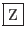
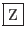

Syntaxe :
bg PID bg = back ground (arrière plan) bg % numéro fg PID fg = foreground (avant plan) fg % numéro
Nous avons vu qu'avec la touche «
 - », il était possible de
faire passer une commande en attente en arrière plan. L'exécution est suspendue mais le process est toujours actif. Si vous
désirez qu'elle continue à s'exécuter, toujours en arrière plan,
utilisez la commande « bg ».
- », il était possible de
faire passer une commande en attente en arrière plan. L'exécution est suspendue mais le process est toujours actif. Si vous
désirez qu'elle continue à s'exécuter, toujours en arrière plan,
utilisez la commande « bg ».
Pour refaire passer en avant plan une commande qui s'exécute en arrière
plan utiliser la commande « fg ». « fg »
permet aussi de réactivé une commande suspendue par «
 - ».
Le processus associé devient alors le processus courant jusqu'à ce que
cette commande soit achevée.
- ».
Le processus associé devient alors le processus courant jusqu'à ce que
cette commande soit achevée.
Pour plus de renseignements, reportez vous à « sh(1) ».
Exemple 5..4 :
% find / -print >/dev/null
-
[1] 1234 Suspended % bg %1 [1] 1234 find / -print >/dev/null & % ls
%fg %1 find / -print >/dev/null
Équivalence :
UNIX OpenVMS SET PROCESS/SUSPEND fg RESUME bg Pas d'équivalence.